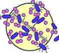

| Ethics Dictionary | Conditions Formulas | PTS Glossary | FAQs |
|
|
| Ethics Dictionary | Conditions Formulas | PTS Glossary | FAQs | |
Note: This chapter is from 'The Road to Clear", Level 4 Pro.
PTS Assist
("10 August Assist")
There are two data a person seeking to apply PTS tech to others must have certainty about:
1. All illness and even mistakes stem to a greater or lesser degree from a PTS Condition.
2. To handle a PTS Condition the basic steps are:
A. Discover the source of suppression.
B. Handle the source or disconnect from it.
It can be very easy to handle such a condition. One of the biggest blocks in the way is actually not understanding the far reaching nature of the simple two data above. A person without a good knowledge of this and some practical experience may think there are all kinds of exceptions to this or be persuaded by others, including the pc, that this couldn't possibly apply in the case at hand.
A PTS condition does not just go away as a result of general auditing. It needs to be addressed specifically. The first and very important step is an educational one. A person in a PTS condition does not respond well to general auditing. He is in an overwhelmed state and in a confused state and the PTS condition is a Present Time Problem of magnitude to him. The educational step gets his feet solid on the bottom step of the ladder to a resolution.
 |
Bacteria exist and accidents |
A PTS person may of course have a physical disease, a physical deficiency or a pathological condition that can be diagnosed and proven medically. This of course mean it will not mysteriously 'blow' just because the pc has a cognition. But one has to understand that he became prone to that deficiency or that medical illness because he was PTS. Unless the PTS condition is addressed, no matter what nutrition or medication he may receive, he may not recover very well. He will not recover permanently. The way illnesses develop and run out seem to be a physical thing - and of course there is the medical side of this as any doctor can tell you. So of course there are deficiencies, bacteria's and viruses, as well as accidents and injuries. But the strange fact is, that before these took hold or happened the pc went PTS. In other words, the PTS condition predisposes the person to these things. If he hadn't been PTS he would have been immune to the bacteria or wouldn't have had his attention dispersed on other things or slipped leading to an accident.
Medical doctors, nutritionists and other health professionals talk in a not very clear way about the "stress factor" and that the stress can cause illness or what looks like malnutrition. They do not have any real tech regarding "stress" so they can observe the effects, but can't really do anything about it. Yet they have this nagging suspicion. They do recognize it as an important factor in many illnesses and accidents. Well, you could say the PTS tech is the tech of these "stress phenomena".
A person under stress is actually under suppression on one or more of his dynamics. If that suppression is located and the person handles it (handle or disconnect) his condition will be seen to improve.
If he also handles Engrams, ARC breaks, problems, overts and withholds connected with this and does it on four flows, full recovery is suddenly possible. That is how we handle the "stress factor" in ST.
PTS'ness, overwhelm and restimulation go hand in hand. Therefore just to find the source of suppression in present time is not always enough to turn things around. Even the suppression stack up as Chains and the Assist in this chapter is an easy and direct way to get to the root of things. When you find the basic on the Chain of that accident or illness that happened to the person, you have the key to find the more basic suppressive terminal and pull the plug out.
A) The first step is to be educated in and understand the basic definitions of PTS Tech.
B) Knowing that, one can be guided to discover to what or to whom he is PTS.
C) When the source is known, one can be coached to handle or disconnect.
It is a waste of time to try to do this without the educational step.
This assist is actually very easy to do. It does not have to be on the Meter and it is not L&N or anything complicated.
The PTS Assist
1) Have the pc study the basic issues of the PTS tech or get him
through PTS Tech - Basic Definitions. He has to grasp "PTS" and
"Suppressive".
2) Have him discuss the illness or accident or condition without much digging around. Simply have him discuss it and let him tell you how this could be a result of suppression. He may be able to tell you rather quickly but may not gain any real relief from that.
3) Ask when he recalls first having that illness or having such an accident. He will look at his track and soon realize that this has happened to him before. This can all happen in a very informal manner. He will usually quickly come up with one early this lifetime incident.
4) Now ask him who it was. He will usually tell you right away.
5) He will usually have named a person, who he is still connected to!
Now you have the terminal. So you work out with him to come up with a handling (or a disconnect if needed).
Usually a handling of getting him gradually to become more cause over the situation goes a long way.
You persuade him to begin to handle on a gradient scale. This may consist of imposing some slight discipline on him such as requiring him to actually answer his mail or write the person a pleasant good roads good weather note or to realistically look at how he antagonized them. In short, what is required in the handling is a low gradient. All you are trying to do is to move the PTS person from effect to begin to be cause over the situation.
6) Check with the person again. Make sure he is
doing the handling; coach him along, always at a gentle good roads and fair weather level and no blow-ups or extreme attitudes.
That is simple to do. It can get more complicated, such as a person being PTS to
an unknown person in his immediate vicinity that he may have to find before he
can handle or disconnect. You can run into people who can't remember more than a
few years back. You can find anything you can find in a case. But simple
handling ends when it looks pretty complex. And that's when you turn it over to
a trained auditor.
|
|
|
|
|